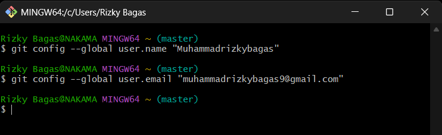
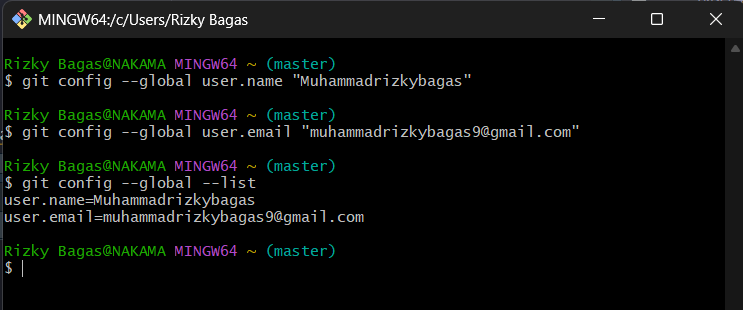
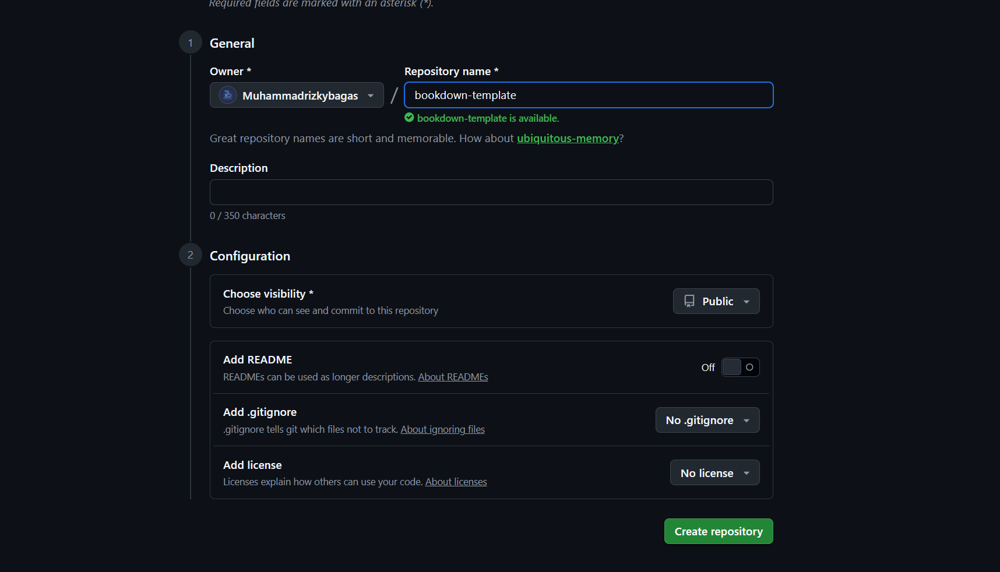
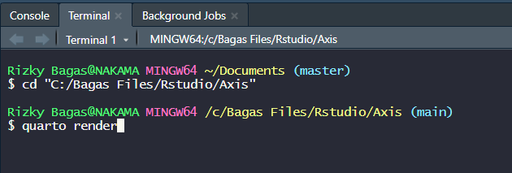
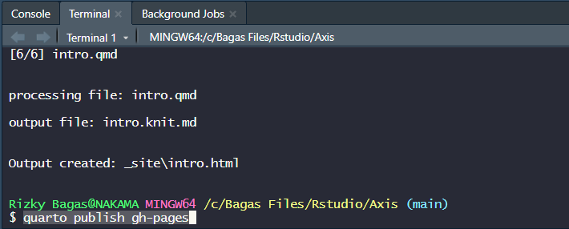

Publish dan Deploy Bookdown ke Github
Pada tahap ini, kita akan mempelajari cara mengunggah project Quarto Book ke GitHub dan mempublikasikannya menggunakan GitHub Pages.
Tujuannya adalah agar buku digital yang sebelumnya hanya bisa dibuka melalui komputer sendiri dapat diakses secara online melalui sebuah link website.
Prosesnya dibagi menjadi dua bagian:
- Push ke GitHub: Mengunggah seluruh file project Quarto ke repository GitHub.
- Deploy ke GitHub Pages: Mengubah hasil render Quarto menjadi website HTML yang dapat diakses secara publik.
1 Persiapan Awal
- Install Git: Unduh dan install Git.
- Konfigurasi Identitas: Buka Git Bash, lalu masukkan nama dan email GitHub Anda:
git config --global user.name "Username Github Kamu"
git config --global user.email "emailkamu@example.com"

- Cek apakah konfigurasi berhasil tersimpan:
git config --global --list
Harusnya ada hasilnya seperti ini:
user.name=Muhammadrizkybagas
user.email=muhammadrizkybagas9@gmail.com

2 Buat Repository Baru
Pertama, kita perlu membuat repository sebagai tempat penyimpanan project Quarto Book.
- Buka browser dan kunjungi
GitHub. - Login menggunakan akun GitHub.
- Klik tombol New Repository.
- Isi nama repository, misalnya
Bookdown-Quarto. - Pilih visibility repository menjadi Public agar website dapat diakses secara publik.
- Jangan centang Add README,
.gitignore, atau License jika project sudah memiliki file sendiri. - Klik Create Repository.`

3 Menghubungkan Project RStudio
Setelah repository berhasil dibuat, kita perlu menghubungkan folder project Quarto yang ada di komputer dengan repository GitHub.
- Gunakan short cut
Windows + Runtuk membuka Command Prompt. - Pastikan path folder sudah direct ke folder bookdown quarto.
- Jalankan perintah berikut:
git init
git add .
git commit -m "Initial commit
Perintah tersebut berfungsi untuk:
git init: Mengaktifkan Git pada folder project.git add .: Menyiapkan seluruh file untuk diunggah.git commit: Menyimpan perubahan project ke dalam riwayat Git.
Selanjutnya, hubungkan project dengan repository GitHub yang sudah dibuat.
Salin URL repository GitHub, kemudian jalankan:
git branch -M main
git remote add origin https://github.com/Muhammadrizkybagas/bookdown-template.git
git push -u origin main
4 Render Project
Sebelum dipublikasikan, kita perlu memastikan seluruh materi dapat di-render dengan baik.
- Buka kembali Terminal di RStudio.
- Pastikan terminal berada di direktori utama project.
- Jalankan perintah:
quarto render

- Tekan Enter.
- Tunggu hingga proses render selesai.
- Pastikan tidak ada pesan error.
5 Pubslih ke Github Pages
Setelah proses render berhasil, kita akan mempublikasikan buku digital menggunakan perintah quarto publish gh-pages.
- Pastikan Terminal masih berada di folder utama project.
- Pastikan kita sedang berada di branch main, bukan gh-pages.
- Jalankan perintah berikut:
quarto publish gh-pages

- Tekan Enter.
- Jika muncul konfirmasi publikasi, ketik Y atau pilih Yes.
- Tunggu sampai proses render dan publish selesai.
- Jika diminta melakukan autentikasi GitHub, ikuti petunjuk yang muncul.
Apa yang terjadi ketika perintah dijalankan?
- Quarto melakukan render project.
- Hasil HTML disiapkan untuk publikasi.
- Quarto membuat branch gh-pages jika belum tersedia.
- Hasil website diunggah ke GitHub.
- GitHub Pages memproses website agar dapat diakses secara online.
Perlu diketahui bahwa quarto publish gh-pages secara default sudah melakukan render ulang. Jadi, quarto render sebelumnya berfungsi untuk memastikan project berhasil dibangun sebelum dipublikasikan.
6 Update Website Jika Ada Perubahan
Jika mahasiswa melakukan perubahan materi atau menambahkan bab baru, website perlu diperbarui agar menampilkan versi terbaru.
Jalankan perintah berikut melalui Terminal RStudio:
Menyimpan perubahan ke GitHub git add . git commit -m “Update materi Quarto Book” git push origin main
Render dan publish ulang
quarto renderquarto publish gh-pages
Setelah proses selesai, buka kembali URL GitHub Pages. Website akan menampilkan materi terbaru.
7 Rangkuman Alur Publikasi
Workflow Publish Quarto Book
Buat repository GitHub
Menyiapkan tempat penyimpanan project.
Push project ke GitHub
Mengunggah file
.qmd,_quarto.yml, dan file pendukung ke branch main.Render project
Menjalankan
quarto renderuntuk menghasilkan HTML.Publish ke GitHub Pages
Menjalankan
quarto publish gh-pagesuntuk mengunggah hasil website.Website berhasil di-deploy
Buku digital dapat diakses melalui URL GitHub Pages.
PERINTAH UTAMA
quarto render
quarto publish gh-pages